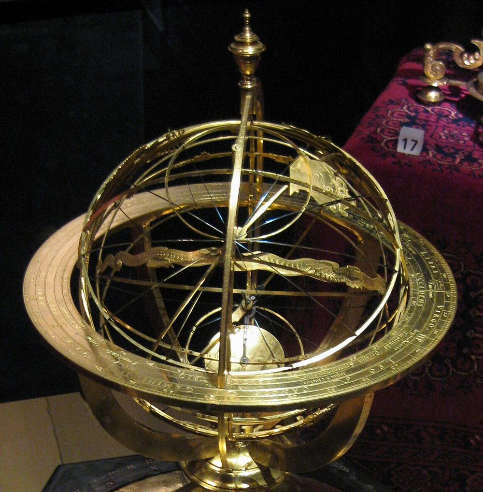

Page 1.1 described a star by its declination $\delta$ and its hour angle $H$, which grows as the sky turns. To follow the Sun, the Moon and the planets we need two coordinates for every point of the celestial sphere, and formulas to convert between coordinate systems. This page defines the three systems used in positional astronomy and derives the conversions.
1 · ObservationOne star, three descriptions
Take Aldebaran, the red eye of the Bull, seen from Rome on 1 January 2026 at 20:00 local time (19:00 UT). Its position can be given in three coordinate systems, depending on what it is measured against:
| Measured against | Coordinates | Aldebaran |
|---|---|---|
| the local horizon (compass and quadrant) | azimuth $A$, altitude $a$ | $125.01^\circ$, $53.67^\circ$ |
| the celestial equator: a modern catalogue (2026) | right ascension $\alpha$, declination $\delta$ | $69.354^\circ$ ($4^\text{h}37^\text{m}$), $16.559^\circ$ |
| the ecliptic, the Sun's yearly path (2026) | ecliptic longitude $\lambda$, latitude $\beta$ | $70.153^\circ$, $-5.465^\circ$ |
| the ecliptic: Ptolemy's catalogue (AD 137) | ecliptic longitude $\lambda$, latitude $\beta$ | $42^\circ 40'$ ($42.667^\circ$), $-5^\circ 10'$ ($-5.167^\circ$) |
The horizontal coordinates change continuously: an hour later the star is higher and further south. The equatorial coordinates stay the same through the night and for years. Over centuries, both the equatorial and the ecliptic coordinates change.
Since Ptolemy, Aldebaran's longitude has grown by 26.30° and its declination has changed by 5.75°, but its latitude has moved by only 7.9′. This is why Ptolemy gave his catalogue in ecliptic coordinates: he had found that the stars shift parallel to the ecliptic, so that "their positions in latitude with respect to the ecliptic must necessarily remain the same" (Almagest VII 4).
The rest of the page defines each system and derives the formulas that convert one into another.
2 · ModelCoordinate systems and rotations
What a frame is
On the celestial sphere, a frame is three choices: a great circle (the fundamental circle), one of its two poles, and an origin on the circle. The longitude runs along the circle from the origin; the latitude runs from the circle towards the pole.
In vectors: put $x$ towards the origin, $z$ towards the pole and $y$ at longitude $90^\circ$, so that the frame is right-handed. A direction at longitude $l$ and latitude $b$ is
$$\mathbf s = \begin{pmatrix} \cos b \cos l \\ \cos b \sin l \\ \sin b \end{pmatrix},$$exactly as for the sky frame of page 1.1. The three frames of the observation differ only in their choices:
| Frame | Fundamental circle | Pole | Origin | Coordinates |
|---|---|---|---|---|
| equatorial | the celestial equator | P, north celestial pole | γ, the vernal point | $\alpha$, $\delta$ |
| ecliptic | the ecliptic, the Sun's yearly path | K, north ecliptic pole | γ, the vernal point | $\lambda$, $\beta$ |
| horizon | the horizon | Z, the zenith | the north point | $A$, $a$ |
The vernal point γ (also written ♈︎, the sign of Aries) is where the Sun crosses the equator going north, at the March equinox. The equator and the ecliptic cross there and at the opposite point, so both frames can share it as their origin.


Right ascension is often given in hours, $24^\text{h} = 360^\circ$, so $1^\text{h} = 15^\circ$: Aldebaran's $69.354^\circ$ is $4^\text{h}37^\text{m}$. The unit is chosen because the sky turns about $15^\circ$ an hour: the right ascension in hours is roughly the time between the meridian crossing of γ and that of the star (page 1.3).
Azimuth
The azimuth $A$ is a compass bearing: $0^\circ$ north, $90^\circ$ east, $180^\circ$ south. Seen from the zenith that is clockwise, the opposite sense to $\alpha$ and $\lambda$, which turn anticlockwise seen from their poles.
So the azimuth is not the longitude of the horizon frame of page 1.1 ($x$ south, $y$ east, $z$ zenith). North is $-x$ and east is $+y$, and
$$\mathbf s_\text{hor} = \begin{pmatrix} -\cos a \cos A \\ \cos a \sin A \\ \sin a \end{pmatrix}.$$Check: $A = 0$ gives $(-\cos a, 0, \sin a)$, north; $A = 90^\circ$ gives $(0, \cos a, \sin a)$, east. Meeus (ch. 13) counts the azimuth from the south instead; his value is $A - 180^\circ$.
Changing frames is a rotation
Take two frames, $F$ and $G$, and one direction. Its components in $G$ are its dot products with $G$'s axes, $s_G^i = \mathbf g_i \cdot \mathbf s$. Writing $G$'s axes in $F$'s components, as the rows of a matrix $M$,
$$\mathbf s_G = M \, \mathbf s_F, \qquad M = \begin{pmatrix} \mathbf g_1^T \\ \mathbf g_2^T \\ \mathbf g_3^T \end{pmatrix}.$$The rows of $M$ are orthonormal, so $M^T M = I$: the inverse transformation is the transpose, $\mathbf s_F = M^T \mathbf s_G$. Both frames are right-handed, so $\det M = 1$ and $M$ is a rotation.
A rotation preserves dot products, and therefore angles: the angular distance between two stars is the same in every frame.
Ecliptic and equator
The two circles cross at γ, so the two frames share their $x$ axis. The ecliptic's $y$ axis points to $\lambda = 90^\circ$, the summer solstice, which lies $\varepsilon$ north of the equator at $\alpha = 90^\circ$. The angle $\varepsilon$ is the obliquity. In equatorial components,
$$\mathbf x = \begin{pmatrix} 1 \\ 0 \\ 0 \end{pmatrix}, \quad \mathbf y_\text{ecl} = \begin{pmatrix} 0 \\ \cos\varepsilon \\ \sin\varepsilon \end{pmatrix}, \quad \mathbf K = \mathbf x \times \mathbf y_\text{ecl} = \begin{pmatrix} 0 \\ -\sin\varepsilon \\ \cos\varepsilon \end{pmatrix}.$$The pole K is at $\alpha = 270^\circ$, $\delta = 90^\circ - \varepsilon$. The matrix whose columns are these three axes takes ecliptic components to equatorial ones. It is a rotation by $\varepsilon$ about the $x$ axis:
$$\mathbf s_\text{eq} = R_x(\varepsilon)\, \mathbf s_\text{ecl}, \qquad R_x(\varepsilon) = \begin{pmatrix} 1 & 0 & 0 \\ 0 & \cos\varepsilon & -\sin\varepsilon \\ 0 & \sin\varepsilon & \cos\varepsilon \end{pmatrix}.$$Multiplying out, with $\mathbf s_\text{eq}$ written in $(\alpha, \delta)$ and $\mathbf s_\text{ecl}$ in $(\lambda, \beta)$:
The last line gives $\delta$ directly. The first two give $\cos\delta$ times the cosine and the sine of $\alpha$, so $\alpha$ comes out with its quadrant from $\operatorname{atan2}$. Dividing them into $\tan\alpha$ would lose the quadrant.
For the Sun, $\beta = 0$:
$$\sin\delta = \sin\varepsilon \sin\lambda, \qquad \tan\alpha = \cos\varepsilon \tan\lambda.$$In the figure
- equator
- the celestial equator, with its pole P; blue arrows are the equatorial frame's $y$ and $z$ axes
- ecliptic
- the Sun's yearly path, with its pole K; yellow arrows are the ecliptic frame's $y$ and $z$ axes
- γ
- the vernal point, where the two circles cross; the black arrow is the $x$ axis both frames share
- star
- the chosen star, at its position of 2026.0
- α, δ
- its equatorial path: along the equator from γ (solid), then up to the star (dashed); the small dot is the foot of the star on the equator
- λ, β
- the same in the ecliptic frame
Read-out
- $\alpha, \delta$
- right ascension (also in hours) and declination
- $\lambda, \beta$
- ecliptic longitude and latitude
- $\mathbf s_\text{eq}, \mathbf s_\text{ecl}$
- the star's unit vector in each frame: $\mathbf s_\text{eq} = R_x(\varepsilon)\,\mathbf s_\text{ecl}$
Equator and horizon
Page 1.1 used a sky frame whose $x$ axis points to the meridian. The equatorial frame differs only in where $x$ points: at γ, a point of the equator that turns with the sky.
Let $\theta$ be the angle the sky has turned since γ crossed the meridian. The meridian is then at $\alpha = \theta$, and a star of right ascension $\alpha$ crossed it $\theta - \alpha$ ago:
$$H = \theta - \alpha, \qquad \mathbf s_\text{sky} = R_z(-\theta)\, \mathbf s_\text{eq}.$$Check: the sky-frame longitude of the star is $\alpha - \theta = -H$, as on page 1.1. Page 1.3 names $\theta$ the local sidereal time and obtains it from the clock. On this page it is a free parameter.
Page 1.1 then tilted the sky frame onto the horizon frame with $R_y(\varphi - 90^\circ)$. The two rotations combined give
$$\mathbf s_\text{hor} = R_y(\varphi - 90^\circ)\, R_z(-\theta)\, \mathbf s_\text{eq}.$$With $R_y(\varphi - 90^\circ)$ written out (its entries are $\pm\sin\varphi$, $\pm\cos\varphi$) and $\mathbf s_\text{sky} = (\cos\delta\cos H, -\cos\delta\sin H, \sin\delta)$, the three rows give
The first line is the altitude of page 1.1. The second checks the sign: a star east of the meridian ($H < 0$) has $\sin A > 0$, an eastern azimuth. The inverse transformation, horizon to equatorial, is the transpose.
In the figure
- equator
- the celestial equator and its pole P, fixed with the stars
- ecliptic
- the ecliptic (dashed), fixed too; it crosses the equator at γ
- horizon
- the observer's horizon, with N, E, S, W and the zenith Z; it moves with $\varphi$ and $\theta$
- meridian
- the dotted circle through N, Z and S (and P)
- dot
- the point where the equator crosses the meridian, at $\alpha = \theta$
- H, δ
- the star's equatorial path: along the equator from the meridian, westward (solid), then up to the star (dashed); the small dots are the feet of the two paths
- A, a
- its horizon path: along the horizon from N through E (solid), then up to the star (dashed)
- star
- the chosen star, at its position of 2026.0
Read-out
- $\alpha, \delta$
- the star's equatorial coordinates, which never change here
- $H$
- its hour angle, $\theta - \alpha$ (between $-180^\circ$ and $180^\circ$)
- $A, a$
- its azimuth, from north through east, and its altitude
- $I$
- the angle between the ecliptic and the horizon (exercise 3)
Spherical trigonometry from the matrices
The pole P, the zenith Z and the star S make a spherical triangle. Its sides are $90^\circ - \varphi$ (from P to Z), $90^\circ - \delta$ and $90^\circ - a$; its angle at P is the hour angle $H$.
The three rows above are the three classical rules for that triangle. The first is the cosine rule for the side ZS; the second is the sine rule; the third is the "five-part" rule. Every formula of spherical trigonometry used on this site comes from multiplying out a rotation.
Ptolemy had neither vectors nor sines. He got the same numbers from Menelaus' theorem on great-circle arcs and a table of chords (Almagest I 13–14), and turned them into tables (I 15–16), tested in section 4.
Where the coordinates break
At a pole of a frame the longitude is undefined: P has no right ascension, Z has no azimuth, and $\operatorname{atan2}(0, 0)$ has no value. Near a pole a small change in the star's position produces a large change in its longitude. The unit vector has no such singularity, which is why the code works with vectors and converts them to angles only at the end.
3 · FitThe obliquity and the origin
The horizon frame needs the latitude $\varphi$ (page 1.1) and the angle $\theta$ (page 1.3). The equatorial and ecliptic frames need two things from the sky: the angle between them, $\varepsilon$, and their shared origin γ.
The obliquity from the noon Sun at the solstices
At noon the Sun is on the meridian, at altitude $90^\circ - \varphi + \delta$. Over the year $\delta$ swings between $+\varepsilon$ and $-\varepsilon$, so the noon altitudes at the two solstices give both parameters, as Kochab's two crossings did on page 1.1:
$$\varepsilon = \frac{h_\text{summer} - h_\text{winter}}{2}, \qquad \varphi = 90^\circ - \frac{h_\text{summer} + h_\text{winter}}{2}.$$At Alexandria in 2026 the real noon Sun stands 82.240° high on 21 June and 35.388° on 21 December. So $\varepsilon = 23.426^\circ$, 0.59′ below the true 23.436°, and $\varphi = 31.186^\circ$. The air lifts the low winter Sun by 1.42′ and the summer Sun by only 0.14′.
Ptolemy measured the same altitudes with his bronze ring and stone quadrant (page 1.1). He found the arc between the solstices "always greater than 47⅔° and less than 47¾°" (Almagest I 12), and adopted $2\varepsilon = 47^\circ 42' 40''$, eleven parts of a circle of 83. So $\varepsilon = 23^\circ 51' 20''$ (23.856°).
He says this agrees with Eratosthenes and Hipparchus. Whether the ratio 11 : 83 was theirs, or Ptolemy's rounding of an older 24°, is uncertain (Toomer's note to I 12).
The true obliquity in AD 137 was $23^\circ 40' 40''$ (23.678°). Ptolemy's value is 10.7′ too large, and the true value lies outside even his bounds (23.833° to 23.875°). Section 4 measures the effect of this error on the Sun's position.
The origin
No star marks γ. It is defined by the Sun: the point where it crosses the equator going north. Locating γ therefore means timing the March equinox; in 2026 it falls on the afternoon of 20 March (UT). Hipparchus collected equinox times, some read off a bronze ring set in the plane of the equator at Alexandria (Almagest III 1).
Because γ is defined by the Sun and not by the stars, it can move relative to the stars, and then the coordinates of every star change with it (section 5). A catalogue therefore gives positions for its own date.
4 · TestThe model against the sky
The conversion formulas involve no approximation, so two things are tested: the formulas themselves, against Ptolemy's independent computation, and the fitted obliquity, against the real Sun.
Ptolemy's tables
Ptolemy needed the Sun's declination for every point of the ecliptic: it gives the noon altitude of the Sun, the length of the day and the shadow of a gnomon on any date (Almagest II). He computed it once and printed it as a table, the table of inclination (I 15): the declination of each degree of longitude from 1° to 90°. A second table (I 16) gives the right ascension every 10°.
He had no sines and no vectors. He worked with chords and with Menelaus' theorem, a relation between the arcs of great circles that cross each other (I 13–14). His tables are therefore an independent computation of the formulas derived above, made with his obliquity $\varepsilon = 23^\circ 51' 20''$.
The formulas, computed with the same $\varepsilon$, reproduce his 90 declinations: half of them within 1″, nine in ten within 3″. The largest difference, 9″ at 27°, is an entry that Toomer suspects was miscopied (57″ written for 47″). His right ascensions agree within 0.35′, because he rounds them to the minute. Any error in his tables therefore comes from the obliquity he put into them, not from the computation.
The table below compares his values with the real Sun of his own time: the declination and right ascension of the reference Sun on the day of AD 137 when it stood at each longitude.
| $\lambda$ | declination $\delta$ | right ascension $\alpha$ | ||||
|---|---|---|---|---|---|---|
| Ptolemy (I 15) | real, AD 137 | Ptolemy − real | Ptolemy (I 16) | real, AD 137 | Ptolemy − real | |
| $10^\circ$ | $4^\circ 01' 38''$ (4.027°) | 4.000° | +1.6′ | $9^\circ 10'$ (9.167°) | 9.173° | −0.4′ |
| $20^\circ$ | $7^\circ 57' 03''$ (7.951°) | 7.895° | +3.3′ | $18^\circ 25'$ (18.417°) | 18.434° | −1.1′ |
| $30^\circ$ | $11^\circ 39' 59''$ (11.666°) | 11.584° | +4.9′ | $27^\circ 50'$ (27.833°) | 27.867° | −2.0′ |
| $40^\circ$ | $15^\circ 04' 04''$ (15.068°) | 14.960° | +6.4′ | $37^\circ 30'$ (37.500°) | 37.541° | −2.4′ |
| $50^\circ$ | $18^\circ 02' 53''$ (18.048°) | 17.917° | +7.8′ | $47^\circ 28'$ (47.467°) | 47.503° | −2.2′ |
| $60^\circ$ | $20^\circ 30' 09''$ (20.503°) | 20.353° | +9.0′ | $57^\circ 44'$ (57.733°) | 57.772° | −2.3′ |
| $70^\circ$ | $22^\circ 20' 11''$ (22.336°) | 22.171° | +9.9′ | $68^\circ 18'$ (68.300°) | 68.326° | −1.5′ |
| $80^\circ$ | $23^\circ 28' 16''$ (23.471°) | 23.297° | +10.5′ | $79^\circ 05'$ (79.083°) | 79.102° | −1.1′ |
| $90^\circ$ | $23^\circ 51' 20''$ (23.856°) | 23.678° | +10.7′ | $90^\circ 00'$ (90.000°) | 90.000° | 0.0′ |
His declinations are too large, by an amount that grows from 1.6′ at $\lambda = 10^\circ$ to 10.7′ at the solstice. That is the error of his obliquity: from $\sin\delta = \sin\varepsilon\sin\lambda$, an error $\Delta\varepsilon$ changes $\delta$ by $(\cos\varepsilon\sin\lambda / \cos\delta)\,\Delta\varepsilon$, which is the whole $\Delta\varepsilon$ = 10.7′ at $\lambda = 90^\circ$.
His right ascensions are off by at most 2.4′, because $\alpha$ depends on $\varepsilon$ only weakly. The table also shows that $\alpha$ lags behind $\lambda$ in this quadrant, by about 2.5° at $\lambda = 40^\circ$ to $50^\circ$. Page 2.2 shows that this lag is one of the two causes of the equation of time.
Fixed frames against the real Sun
The table checks one obliquity in one year, at nine longitudes. Figure 3 makes the same comparison for every day of a year, for any year from 300 BC to AD 2100 and any obliquity: it takes the reference Sun's longitude, turns it into $(\alpha, \delta)$ with a fixed $\varepsilon$, and compares the result with the reference Sun's own $(\alpha, \delta)$.
With $\varepsilon$ fitted to the year, the differences stay under 0.11′ in $\delta$ and 0.03′ in $\alpha$. They come from nutation, a small periodic oscillation of the Earth's axis, and from the Sun's latitude of a few arcseconds. With the right obliquity, then, the conversion reproduces the real Sun; what matters is the value of $\varepsilon$.
In the figure
- curve
- $\Delta\delta = \delta_\text{model} - \delta_\text{real}$ in arcminutes, over one year, against the Sun's longitude
- curve
- $\Delta\alpha = \alpha_\text{model} - \alpha_\text{real}$, the same for the right ascension
- line
- no error
Read-out
- $\varepsilon_\text{real}$
- the real mean obliquity in the middle of that year
- $\varepsilon_\text{model} - \varepsilon_\text{real}$
- how far off the model's obliquity is
- $\max|\Delta\delta|, \max|\Delta\alpha|$
- the largest errors over the year
With Ptolemy's $\varepsilon$ in AD 137, $\Delta\delta$ reaches 10.7′ at the solstices and vanishes at the equinoxes, where the two circles cross. To first order $\Delta\delta = (\cos\varepsilon\sin\lambda / \cos\delta)\, \Delta\varepsilon$, which is $\Delta\varepsilon$ at the solstices.
$\Delta\alpha$ is smaller, 2.4′, and vanishes at both the equinoxes and the solstices. Used today, Ptolemy's obliquity misses the Sun's declination by 25.1′, most of the Sun's diameter.
5 · ResidualWhat the fixed frames leave out
The angle between the frames changes. The obliquity was 23.678° in Ptolemy's time and is 23.436° now: 14.5′ less, falling 46.8″ a century. Even the obliquity of AD 137, used today, misses the Sun's declination by 14.5′ at the solstices.
Copernicus, comparing his measurements with Ptolemy's, concluded "that the obliquity of the ecliptic also is variable" (De Revolutionibus II 2 [f. 29r]).
The origin moves. Aldebaran's longitude grew by 26.30° since Ptolemy while its latitude stayed within 8′: the vernal point itself moves backwards along the ecliptic. Ptolemy's own longitude for the star is also 71′ short of the real one in his time. Page 2.3 takes up both.
The angle θ is still unknown. In Figure 2, $\theta$ was set with a slider. In the sky it depends on the time: it is the angle the sky has turned since γ last crossed the meridian. To place a star in the observer's sky at a given moment we need $\theta$ at that moment, and page 1.3 shows how to compute it.
Exercises
Show that the transformation from the equatorial frame to the ecliptic one is $R_x(-\varepsilon)$, and write out $\lambda$ and $\beta$ in terms of $\alpha$ and $\delta$. Then find Aldebaran's $\lambda$ and $\beta$ from $\alpha = 69.3539^\circ$, $\delta = 16.5594^\circ$ (2026.0), with $\varepsilon = 23.4359^\circ$. Check in Figure 1.
A rotation's inverse is its transpose. What is the transpose of $R_x(\varepsilon)$?
$R_x(\varepsilon)^T = R_x(-\varepsilon)$: transposing swaps the two $\sin\varepsilon$ entries, which is the same as changing the sign of $\varepsilon$. So $\mathbf s_\text{ecl} = R_x(-\varepsilon)\,\mathbf s_\text{eq}$, and multiplying out:
$$\begin{aligned} \cos\beta \cos\lambda &= \cos\delta \cos\alpha, \\ \cos\beta \sin\lambda &= \cos\varepsilon \cos\delta \sin\alpha + \sin\varepsilon \sin\delta, \\ \sin\beta &= \cos\varepsilon \sin\delta - \sin\varepsilon \cos\delta \sin\alpha. \end{aligned}$$These are the formulas of section 2 with $\varepsilon \to -\varepsilon$ and the roles of the two frames swapped.
For Aldebaran, $\mathbf s_\text{eq} = (0.3380, 0.8970, 0.2850)$ and $\mathbf s_\text{ecl} = (0.3380, 0.9363, -0.0952)$. So $\sin\beta = -0.09525$, $\beta = -5.465^\circ$, and $\lambda = \operatorname{atan2}(0.93632, 0.33797) = 70.153^\circ$.
On 21 May 2026 the Sun reaches $\lambda = 60^\circ$ ($\beta = 0$). Find its declination and right ascension with $\varepsilon = 23.4359^\circ$. Then repeat with Ptolemy's $23^\circ 51' 20''$ and check the result against his values in the table of section 4 (row $60^\circ$).
With $\beta = 0$: $\sin\delta = \sin\varepsilon\sin\lambda$ and $\tan\alpha = \cos\varepsilon\tan\lambda$, with $\alpha$ in the same quadrant as $\lambda$.
$\sin\delta = \sin 23.4359^\circ \sin 60^\circ = 0.34444$, so $\delta = 20.147^\circ$. And $\tan\alpha = \cos 23.4359^\circ \tan 60^\circ = 1.58917$, so $\alpha = 57.819^\circ$, or $3^\text{h} 51^\text{m}$. The right ascension lags the longitude by 2.181°.
The reference Sun on that day differs by 5.0″ in $\delta$ and 1.2″ in $\alpha$: its latitude is $-1.7''$, and nutation shifts it slightly.
With Ptolemy's obliquity, $\delta = 20^\circ 30' 09''$ (20.503°), exactly his table I 15. And $\alpha = 57^\circ 44' 11''$ (57.736°), against his $57^\circ 44'$ in I 16.
As the sky turns, the ecliptic meets the horizon at an angle $I$ that changes. At Rome ($\varphi = 41.9^\circ$), predict the smallest and the largest $I$, and which point of the ecliptic is rising at each. Check with Figure 2 and its read-out. Then explain why a thin crescent Moon after sunset is easier to see in March than in September.
The angle between two planes is the angle between their poles, so $I = 90^\circ - a_\text{K}$, where $a_\text{K}$ is the altitude of the ecliptic pole. K is a star of declination $90^\circ - \varepsilon$: use page 1.1's highest and lowest altitudes.
K has $\delta = 90^\circ - \varepsilon$ and $\alpha = 270^\circ$. Its altitude swings between $a_\text{max} = 90^\circ - |\varphi - \delta|$ and $a_\text{min} = |\varphi + \delta| - 90^\circ$, so $I$ swings between
$$I_\text{min} = 90^\circ - \varphi - \varepsilon = 24.66^\circ, \qquad I_\text{max} = 90^\circ - \varphi + \varepsilon = 71.54^\circ.$$The smallest comes when K is on the upper meridian, $\theta = 270^\circ$. The equator's rising point is then at $\alpha = \theta + 90^\circ = 0^\circ$: γ is rising. The largest comes at $\theta = 90^\circ$, with the autumnal point rising.
At sunset at the March equinox (17:22 UT at Rome) the Sun sets at γ, so the opposite point rises: $\theta = 91.3^\circ$ and $I = 71.5^\circ$. At the September equinox (sunset 17:06 UT) it is the other way round: $\theta = 271.5^\circ$, $I = 24.7^\circ$.
The young Moon is never far from the ecliptic, a few tens of degrees east of the Sun. On a March evening the ecliptic stands steeply over the western horizon, so the crescent is high in a dark sky. In September the ecliptic lies low, and the crescent sets in the twilight.
Sources
- Ptolemy, Almagest (transl. G. J. Toomer, 1984): I 12 (the arc between the solstices, the ratio 11 : 83, with Toomer's note); I 13–14 (Menelaus' theorem, declinations); I 15 (table of inclination); I 16 (right ascensions); II 10–13 (angles between the ecliptic and the horizon); III 1 (equinox observations); VII 4 and the catalogue (ecliptic coordinates, Aldebaran).
- Copernicus, De Revolutionibus (transl. E. Rosen), II 2 [ff. 28v–29r] (the obliquity, measured and variable); II 3–4 (declination and right ascension).
- R. Fitzpatrick, A Modern Almagest, §§ 2.3–2.5, 2.7, 2.9 and 2.16. He writes Q for the ecliptic pole (here K) and L for the latitude (here $\varphi$).
- J. Meeus, Astronomical Algorithms (2nd ed., 1998), ch. 13 (transformation of coordinates; azimuth from the south) and 22 (obliquity).
- Star positions: SIMBAD (CDS, Strasbourg), ICRS J2000, retrieved 2026-10-17. Precession: J. Vondrák, N. Capitaine, P. Wallace (2011).
- Every number on this page:
tools/numbers/1.2-frames.js.